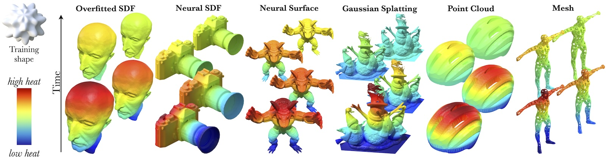

About
I am broadly interested in how machines can learn to understand and predict the physical world. My background is in mathematics; my current work sits at the intersection of generative models, physical dynamics, and representation learning. I am an EDIC fellow at EPFL, where I will pursue this research in the CVLab.
Publications
Learning to Solve PDEs on Neural Shape Representations
IEEE/CVF Conference on Computer Vision and Pattern Recognition (CVPR), 2026.

Education
PhD, Computer & Communication Sciences (EDIC) — EPFL
Starting September 2026. EDIC Fellowship. Expected to join the CVLab.
MVA (Mathematics, Vision, Learning) — ENS Paris-Saclay
Research master's. GPA 4.0 / 4.0.
MSc, Data Science, Optimisation & Probability — ENSTA Paris (IP Paris)
GPA 4.0 / 4.0, top 5% of cohort.
Contact
email